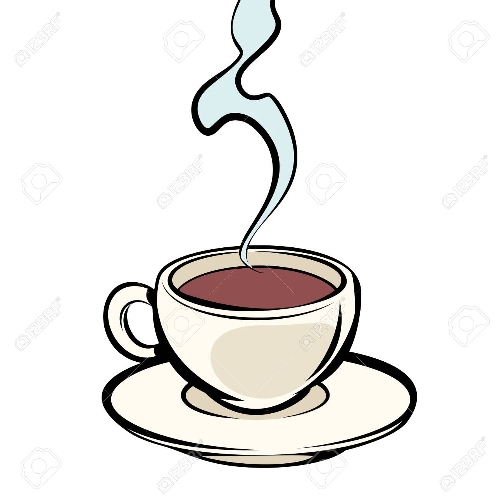

Introduction
Coffee, beverage brewed from the roasted and ground seeds of the tropical evergreen
coffee plant of
African origin. Coffee is one of the three most-popular beverages in the world (alongside water and tea)
and one of the most-profitable international commodities. Though coffee is the basis for an endless
array of beverages, its popularity is mainly attributed to its invigorating effect, which is produced by
caffeine, an alkaloid present in coffee.

History
Wild coffee plants, probably from Kefa (Kaffa), Ethiopia, were taken to southern Arabia and placed under
cultivation in the 15th century. One of many legends about the discovery of coffee is that of Kaldi, an
Arab
goatherd who was puzzled by the strange antics of his flock. About 850 CE Kaldi supposedly sampled the
berries of the evergreen bush on which the goats were feeding and, on experiencing a sense of
exhilaration,
proclaimed his discovery to the world.
Whatever the actual origin of coffee, its stimulating effect undoubtedly made it popular. Ironically,
though
Islamic authorities pronounced the drink intoxicating and therefore prohibited by the Qurʾān, many
Muslims
were attracted to the beverage as a substitute for alcohol, also prohibited by the Qurʾān.
Despite
the
threat of severe penalties, coffee drinking spread rapidly among Arabs and their neighbours and even
gave
rise to a new social and cultural entity, the coffeehouse.Called qahveh khanehs, coffeehouses first
appeared in Mecca in the 15th century and in Constantinople (now Istanbul) in the 16th. They became
popular meeting places where men of learning often gathered to converse, play chess or backgammon-type
games, sing and dance, listen to music, discuss politics and news of the day, and smoke and drink. They
became known as “schools of wisdom” because of the clientele they attracted, and, though political and
religious leaders feared the free and frank discourse common in such establishments, their frequent bans
on coffeehouses were impossible to maintain. The drink had already become ingrained in daily ritual and
culture.
Coffee was introduced into one European country after another throughout the 16th and 17th centuries.
Many accounts are recorded of its prohibition or approval as a religious, political, and medical potion.
By the end of the 17th century, coffeehouses were flourishing across Britain, the British colonies in
America, and continental Europe.
Instant Coffee
A number of products are sold for the convenience of consumers who do not want to prepare their own
coffee or who do not have access to coffeemaking equipment. Instant coffee is dried into soluble powder
or freeze-dried into granules that can be quickly dissolved in hot water.Originally invented in
1907, it rapidly gained in popularity in many countries in the post-war period, with Nescafé
being the most popular product.
Many consumers determined that the convenience in preparing a cup
of instant coffee more than made up for a perceived inferior taste, although, since the late 1970s,
instant coffee has been produced differently in such a way that is similar to the taste of freshly
brewed coffee.[citation needed] Paralleling (and complementing) the rapid rise of instant coffee was the
coffee vending machine invented in 1947 and widely distributed since the 1950s.[130]
Canned coffee has been popular in Asian countries for many years, particularly in China, Japan,
South
Korea, and Taiwan. Vending machines typically sell varieties of flavored canned coffee, much like brewed
or percolated coffee, available both hot and cold. Japanese convenience stores and groceries also have a
wide availability of bottled coffee drinks, which are typically lightly sweetened and pre-blended with
milk. Bottled coffee drinks are also consumed in the United States.
Liquid coffee concentrates are sometimes used in large institutional situations where coffee needs to be
produced for thousands of people at the same time. It is described as having a flavor about as good as
low-grade robusta coffee, and costs about 10¢ a cup to produce. The machines can process up to 500 cups
an hour, or 1,000 if the water is preheated.
TYPES OF COFFEE
Cappuccino

Espresso
Latte

Black Coffee

Iced Coffee
Health Effects

Coffee consumption has been associated with various health benefits and health risks. In general,
moderate consumption, amounting to three or four cups daily, is linked to a reduced risk of
cardiovascular disease, type 2 diabetes mellitus, liver cancer, and Parkinson disease. Research has also
linked moderate coffee consumption to a longer life span.
Excessive coffee consumption can cause sleep disturbances, anxiety, jittery sensations, and heartburn.
Studies conducted in the 20th century suggested a causative link between coffee and cancer. In 2016,
however, the World Health Organization (WHO) removed coffee from the list of possible carcinogens
because multiple studies had debunked a possible causative association between coffee consumption and
cancer.
Nathan Myhrvold